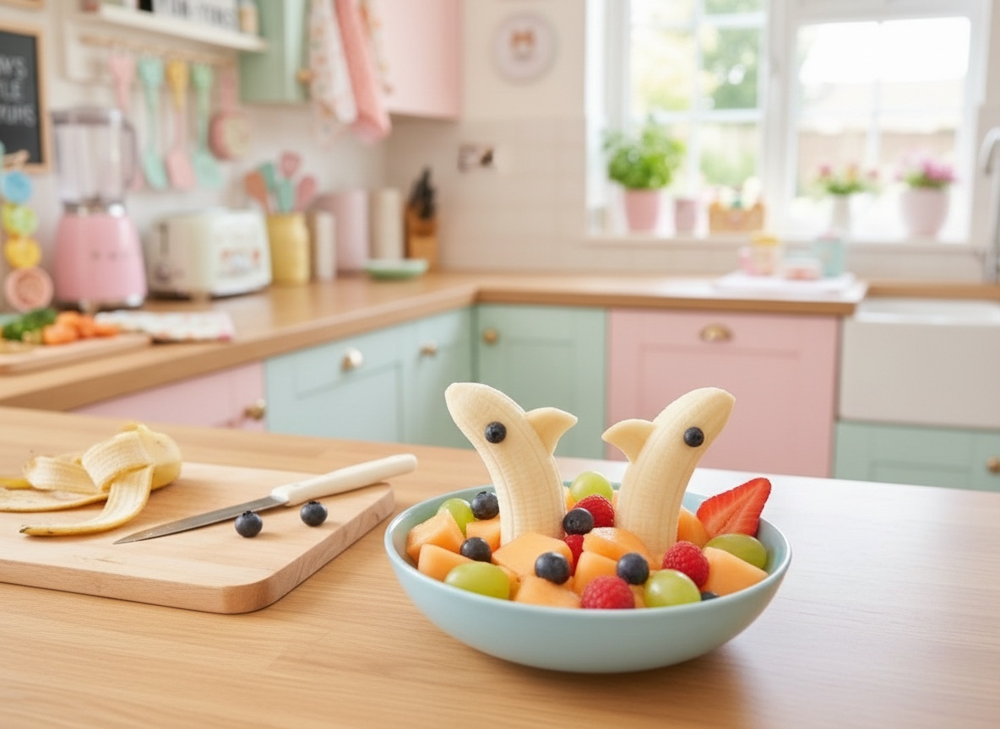

Banana Dolphin Fruit Bowl
A 5-minute fruit bowl trick with a banana "dolphin"

Ingredients
- 1 banana
- 2 blueberries
- 1 cup mixed fruit (melon, grapes, berries) for the "water"
Steps
- Cut the banana in half at an angle to make a pointed "nose".
- Cut a small triangle notch from the top of the flat end for the tail fin.
- Arrange the mixed fruit in a bowl as the "ocean".
- Stand the banana pieces nose-up in the fruit like they're leaping out of the water.
The 3-Step Cuteness Rule
- Press two blueberries on for eyes before serving.
- Add a strawberry-slice splash next to the 'dolphin' for extra motion.
- Say 'Look, he's jumping!' — works every single time.
Penny's Notes
This is the one I film the most because it takes exactly as long to make as it does to explain. Zero cooking, zero mess, maximum "again, again!"
“If it's cute, they'll eat it. Promise!”